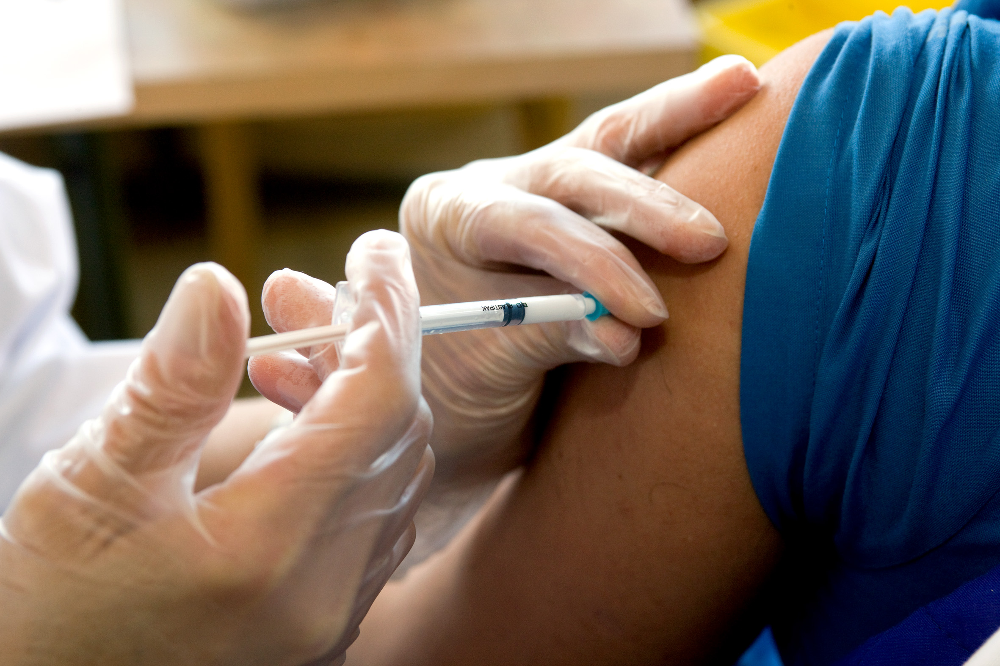

+380(97) 369 76
65
+380(97) 369 76
65Кодирование уколом в Одессе
Вылечиваем алкогольную зависимость с 100% случаев
Работаем в Одессе, Киеве, Львове, Харькове, Днепре, Запорожье, Черноморске, Каменском


Бесплатная консультация, работаем круглосуточно 24/7
Вылечиваем алкогольную зависимость с 100% случаев
Работаем в Одессе, Киеве, Львове, Харькове, Днепре, Запорожье, Черноморске, Каменском
Кодирование от алкоголизма уколом в медицинском центре UmbrellaPlus “Безопасная наркология” в Одесе - является самым популярным и эффективным методом в лечении алкогольной зависимости. Кодировка в Одессе происходит с помощью одного из самых проверенных и доступных препаратов на рынке это дисульфирам или эспераль. Кодировка уколом объективно самый современный метод в лечении алкоголизма с помощью инъекции удается сформировать у зависимого пациента сильное отвращение к спиртным напиткам на физическом и психологическом уровне. Кодировка - это радикальный метод в лечении зависимости именно с помощью укола от алкоголизма удается прервать патологическую тягу к спиртному и завязать с пагубной зависимостью.
Кодировка уколом — это метод, при котором пациенту вводят специальный препарат, вызывающий непереносимость алкоголя и отвращение к нему. Процедура проводится под наблюдением врача и предполагает использование таких медикаментов, как дисульфирам и эспераль, который блокирует переработку алкоголя в организме, вызывая неприятные симптомы при употреблении спиртного. Кодировка уколом обеспечивает быструю и эффективную защиту от срыва, помогая пациенту преодолеть физическую зависимость. Этот метод подходит для людей, готовых к серьезным изменениям в жизни и стремящихся избавиться от алкогольной зависимости. Однако важно помнить, что кодировка не является единственным решением, и рекомендуется сочетать ее с психологической поддержкой и терапией.
Кодирование от алкоголизма происходит с помощью введения пациенту под лопатку препарата дисульфирам , который вызывает сильную токсическую реакцию если в организм закодированного пациента попадет спиртное. Таким образом с помощью кодирования от алкоголизма можно предотвратить употребление зависимого пациента а так же сформировать сильное отвращение к спиртным напиткам на психологическом и физическом уровне. Кодирование от алкоголизма является достаточно специфическим методом в лечении зависимости который требует хорошей мотивации от пациента с желанием остановить бесконтрольный прием спиртного и избавиться от зависимости.
Процесс начинается с консультации пациента в медицинском центе UmbrellaPlus “Безопасная наркология” в Одессе , проводиться оценка его психологической подготовки и физического состояния здоровья. Врач объясняет зачем нужно закодировать пациента , проводит с ним психологическую беседу а так же мотивирует на выздоровление. Затем применяется конкретный метод кодировки, например, инъекционное введение препарата, блокирующего переработку алкоголя и вызывающего неприятные симптомы при употреблении формирующее отвращение к алкоголю. После процедуры важна поддержка, которая может включать консультации и участие в реабилитационных программах, чтобы закрепить результаты и предотвратить рецидивы.
Инъекционные препараты для кодирования от алкоголизма который используют врачи наркологи в Одессе - могут обеспечивать токсический эффект при употреблении спиртного от 1 месяца до 5 лет. Однако важно помнить, что кодировка не является панацеей в лечении алкогольной зависимости а для достижения устойчивого результата необходима комплексная терапия которая обязательно должна включать психологическую поддержку и изменение образа жизни. Поэтому после окончания действия кодировки важно продолжать работу над собой и поддерживать связь с врачами наркологами и группами поддержки.
На сегодняшний день в городе Одесса врачи наркологи используют два вида препаратов при кодировании от алкоголизма с помощью укола:
Кодирование уколом Одесса - это самый золотой стандарт в лечении алкогольной зависимости зависимости, он эффективен для создания стойкой ремиссии и длительного отвращения к любым спиртным напиткам. Кодирование от алкоголизма уколом используется наркологами в лечении алкоголизма в Америке и Европе, а так же такой метод широко использует Украинская наркология в частности и Одесские доктора центра UmbrellaPlus “Безопасная наркология”.
Что бы закодироваться от алкоголизма с помощью укола , пациенту нужно воздержаться от приема спиртных напитков минимум на 3-5 дней. После чего можно пройти специфическое лечение алкогольной зависимости с помощью инъекции под лопатку или внутривенно. Что бы получить подробную консультацию бесплатно в Одессе по вопросу кодирования от алкоголизма уколом - позвоните по номеру 050-021-69-57. В медицинский центр UmbrellaPlus"Безопасная наркология".
Самым проверенным и доступным препаратом при лечении алкогольной зависимости является дисульфирам , он используется наркологами при лечении любой стадии алкоголизма и вводится пациенту под лопатку. Дисульфирам самый старый и надежный препарат который хорошо запатентовал себя в Америке , Германии , Австралии и Норвегии. Украинскими врачами наркологами он так же широко используется и является первым препаратом выбора при лечении любой стадии алкоголизма. К плюсам препарата можно отнести , хорошую переносимость , доступную цену , низкий уровень побочных эффектов а так же он всегда есть в наличии. Сам препарат Американского производства соответственно высокого качества. Что бы закодироваться от алкоголизма уколом в Одессе вам нужно позвонить по номеру 050-021-69-57 и получить первичную консультацию врача нарколога бесплатно.
Эспераль один из современных медицинских препаратов который изготовлен на основе дисульфирама для лечения любой стадии алкогольной зависимости является хорошей альтернативой классическому дисульфираму. Время действия препарата от 1 до 12 месяцев. Эспераль вводиться в жировую ткань подлопаточной области. В случаи если пациент употребит даже минимальную дозу алкоголя организм который находиться под кодированием эспералем немедленно отреагирует сильнейшим токсическим эффектом который нередко заканчивает реанимационной помощью. Плюсы эспераля в том что его формула является более очищенной и более хорошо переносимой больными. Так же есть модифицированный метод кодирования от алкогольной зависимости когда препарат вводиться под лопатку и в вену для более сильного и продолжительного эффекта. Так же эспераль имеет низкий уровень противопоказаний и вводится даже самым тяжелым ( в плане алкогольной зависимости ) пациентам.
Стоимость кодирования от алкоголизма уколом в Одессе начинается от 3999грн.
| Услуга | Цена |
|---|---|
| Лечение алкоголизма Одесса | От 1499 грн |
| Вывод из запоя Одесса | От 1499 грн |
| Вывод из запоя на дому Одесса | От 1699 грн |
| Капельница от алкоголя Одесса | От 1499 грн |
| Капельница от алкоголя на дому Одесса | От 1699 грн |
| Лечение пивного алкоголизма Одесса | От 1499 грн |
| Лечение женского алкоголизма Одесса | От 1499 грн |
| Кодирование от алкоголизма Одесса | От 3999 грн |
| Кодирование уколом Одесса | От 3999 грн |
| Кодирование от алкоголизма уколом Дисульфирам | От 3999 грн |
| Кодирование от алкоголизма уколом Эспераль | От 5500 грн |
| Подшивка от алкоголя Одесса | От 9999 грн |
| Кодирование по методу Довженко Одесса | От 14999 грн |
Горячий укол от алкоголизма - это модифицированный вариант кодирование от алкогольной зависимости который используют врачи наркологи в Одессе. Горячий укол от алкоголизма проводится в два этапа - первый это введение препарата для кодировки под лопатку как в обычном варианте кодирования, после чего вводится вторая часть дисульфирамо-подобного раствора внутривенно для того что бы ускорить процесс насыщения препаратом всех клеток в организме человека. Когда нарколог вводится горячий укол от алкоголизма в вену пациент ощущает характерное чувство тепла разной интенсивности которое зависит от личного фактора переносимости препарата. От сюда и пошло народное название - горячий укол от алкоголизма.
Кодировка от алкогольной зависимости используется как вариант кратковременного “быстрого” метода лечения алкогольной зависимости при котором вводят дисульфирам прямо в вену. Это хороший метод с помощью которого можно получить быстрый но краткосрочный эффект. Препарат хорошо переносится и имеет низкую токсичность. Из минусов которые мы рассматриваем это короткий срок действия препарата который длиться не более 3 месяцев. По этому важно понимать что лечение алкоголизма а темболее кодирование от алкогольной зависимости требует комплексного комбинированного подхода для достижения длительной или даже пожизненной ремиссии. В настоящее время в Одессе Кодирование от алкоголизма в вену проводят врачи наркологи центра UmbrellaPlus “Безопасная наркология”. Позвоните по номеру 050-021-69-57 что бы закодироваться уколом от алкоголизма в вену.
Введение дисульфирама внутримышечно является самым старым методом кодирования от алкоголизма уколом , в настоящее время такой способ кодировки от алкоголизма используют редко и ему предпочитают введение препарата под лопатку так как срок длительности эффекта при введении дисульфирама под лопатку будет больше так как под лопаткой находятся меньше сосудов и препарат дольше “рассасывается”. Но стоит отметить что в настоящее время такой метод кодирования все равно используют но редко. Как правило врачи не имеющие должного опыта лечения алкоголизма современными методами используют проверенные старые методики.
Сделать укол от алкоголизма в Одессе можно в медицинском центре UmbrellaPlus “Безопасная наркология”. Мы предлагаем нашим пациентам любой метод кодирования от алкоголизма с любой методикой введения на выбор. Помните что самое главное в лечении алкогольной зависимости и кодирования от алкоголизма это должная мотивация пациента. Только при сформированном желании и настрои на выздоровления удается достичь длительной ремиссии и продолжительной трезвости. Алкоголизм не приговор и при должном лечении можно избавиться от него на всю жизнь.
Закодироваться от алкоголизма уколом можно в нашем центре UmbrellaPlus “Безопасная наркология” либо вызвать врача нарколога на дом. Процедура занимает не более получаса. Подписываются документы о согласии на лечение, проводиться инъекция, выдаётся справка в случаи если она нужна пациенту на работу. Мы работаем только с качественными зарубежными препаратами и ставим печать под каждой своей манипуляцией. Что бы обратиться к врач наркологу и получить бесплатную консультацию позвоните по номеру 050-021-69-57.
Анонимно

"Ну в хлопців просто золоті руки й світла голова, мене капали Олексій та Владислав, буквально за декілька сеансів я наче заново народився, до цього пив більше 3х тижнів, не міг зупинитись, дуже радий що знайшов саме цих спеціалістів, всім рекомендую"
Анонимно
"В течение нескольких лет я злоупотреблял алкоголь, что привело к увольнению с работы и вызвало у меня мысли о суициде. Понимая, что такой образ жизни неприемлем, я обратился за помощью в клинику "Амбрела". Здесь я смог преодолеть свою зависимость от спиртного благодаря заботливым и опытным врачам, а также эффективной системе лечения. Спустя более года я полностью избавился от желания употреблять алкоголь, и теперь моя жизнь вернулась в норму. Я даже не приближаюсь к спиртному! Благодарю врачей клиники "Амбрела" за их помощь и заботу."
Анонимно
"Я обращался за помощью в различные клиники, пытаясь избавиться от своей зависимости от алкоголя, но без особых успехов. Никак не мог справиться с желанием прибегнуть к бутылке, пока друг не посоветовал мне обратиться в центр "Амбрелла". Я записался на прием и был поражен заботливым отношением к пациентам. Уже прошло два года, и теперь я смотрю на алкоголь с абсолютной равнодушием, активно занимаюсь спортом и улучшил отношения в семье. Благодаря центру "Амбрелла" моя жизнь была спасена от алкогольной зависимости!"
Анонимно

"Хочу выразить свою благодарность врачам из центра алкоголизма "Амбрела" за то, что они буквально спасли мою жизнь. В течение последнего года я сильно увлекался питьем, и все это привело к катастрофическим последствиям. Хотя я ходил на терапевтические сеансы, но безрезультатно. Тогда я нашел адрес клиники "Амбрела" в интернете, изучил отзывы и информацию о центре, и записался на прием. Там мне сразу предложили методику лечения, которая помогла не только справиться с физической ломкой, но и психической зависимостью от алкоголя. Не буду распространяться, скажу только одно - после пребывания в этой клинике я стал другим человеком, и навсегда забыл, что такое привкус алкоголя. Больше меня не тянет на это! Я искренне верю, что в центре "Амбрела" трудятся настоящие целители душ!"
Анонимно
"После сложного развода мой сын начал подавлять свою обиду и горе употреблением алкоголя. Он старался скрывать это от меня, но я, как мать, почувствовала, что что-то не так. В конечном итоге, ситуация стала критической. Моя знакомая посоветовала мне обратиться в клинику "Амбрела". Я была приятно удивлена их работой! Они помогли сыну преодолеть очередной период злоупотребления алкоголем, и с тех пор прошел уже более года, и он совсем не пьет."
Анонимно
"Благодаря вашей помощи, моя семья была спасена. Я с трудом уговорила мужа начать лечение, и последний каплей был пьяное ДТП. К счастью, в аварии никто не пострадал, но это был для него сигнал к действию. Он наконец согласился пройти курс лечения на дому, в стационар не хотел ложиться. Лечение было трудным, и были моменты, когда срыв был настолько близок, но благодаря вашему центру Амбрелла мы справились с этим."
Анонимно
"Для меня эта клиника стала настоящим спасением! Долгое время я упорно отказывался от лечения, уверен был, что со мной все в порядке. Но к счастью, семья уговорила меня попробовать. И сегодня я чувствую себя невероятно счастливым, осознавая, что мне абсолютно не нужен алкоголь. Огромное спасибо за помощь и поддержку, которые я получил здесь! Я благодарен вам за новую возможность жить полноценной и счастливой жизнью!"
Анонимно
"Выражаю благодарность ребятам, которые оказали мне помощь и не отвернулись. Уже 10 месяцев я остаюсь чистой. Благодарю за то, что помогли найти новый путь в моей жизни."
Приезд в течении 60 минут от момента поступления заявки
Наши филиалы есть во всех больших городах Украины.
Мы оказываем профессиональную доказательную медицинскую помощь. Гарантией является наше имя.
Номер телефона:
+380 (97) 369 76 65
+380 (50) 021 69 57
Адрес главного офиса: г. Харьков ул. Сумская 47
Офис вашего города нужно
уточнить
Работаем в: Одессе, Киеве, Львове, Харькове, Днепре,
Запорожье
Telegram: t.me/umbrellaplus
График работы: Круглосуточно